Юрлица и основатели
Dwelly работает под торговым именем «Dwelly is a Family of Brands», а юридически это две британские компании: головная и промежуточный холдинг, которому принадлежат купленные агентства. Все деньги инвесторов приходят на головную компанию, покупки идут через холдинг. С названием легко ошибиться: в реестре есть посторонняя DWELLY LTD.
| Что | Данные |
|---|---|
| Торговое имя | Dwelly, сайт dwelly.group |
| Головная компания | PROSPIRE TECHNOLOGIES LTD, № 14991567, зарегистрирована 10.07.2023, вид деятельности SIC 62090 (IT-услуги). С 01.07.2026 офис находится по адресу 105 High Street, Worcester, до этого 86–90 Paul St, Лондон1 |
| Промежуточный холдинг | PROSPIRE OPERATIONS LIMITED, № 15595867, с 26.03.2024. Владеет 75%+ акций каждого купленного агентства6 |
| Посторонняя компания | DWELLY LTD № 15055007 к группе не относится. Её единственный директор Harkiran Pabla, адрес в Датчете7 |
Основатели и их прошлый бизнес
Двое основателей работали в Uber, третий в McKinsey и Gett. До Dwelly двое из них уже построили и продали сервис аренды в России. На странице About компания пишет: «We built, ran and sold a tech-enabled lettings agency before starting Dwelly» — «до Dwelly мы построили, запустили и продали технологичное агентство аренды».
| Кто | Роль в Dwelly | До Dwelly |
|---|---|---|
| Илья (Ilia) Дроздов | CEO, директор с 10.07.2023 | Работал в Uber Continental Europe в 2014–2018 годах и вырастил команду Uber Russia с 5 до 1 000 человек. Сооснователь и CEO «ПИК-Аренды», сервиса долгосрочной аренды девелопера ПИК (запуск в 2018 году, продажа в 2021 году). Выпускник ВШМ СПбГУ810 |
| Дмитрий Хануков | CTO, резидент США | В Uber руководил технологиями рекрутинга в регионе EMEA, затем был CTO «ПИК-Аренды»11 |
| Дан Лифшиц | CPO (в 2024–2025 годах назывался COO), директор с 26.06.2025 | Стал associate в McKinsey в 21 год, с 2020 года был генеральным менеджером Gett UK8 |
«ПИК-Аренда» в 2019 году получила $1 млн выручки при ~50 сотрудниках. Сервис ставил в квартиры умные замки и камеры и подбирал жильё алгоритмом9. К продаже в 2021 году у него было 10 000+ объектов8, а за три года через него прошло $50 млн арендных платежей (GMV, оборот, который проходит через компанию)41. До того как писать код Dwelly, основатели 16–18 месяцев сами вели агентство в Халле. Первое купленное агентство, Lime Property, взяли, чтобы «troubleshoot technologies before rolling them out» — «отладить технологии перед раскаткой»43. Бывший владелец Lime Сэм Хамфрис теперь руководит в Dwelly покупками агентств (Head of M&A).

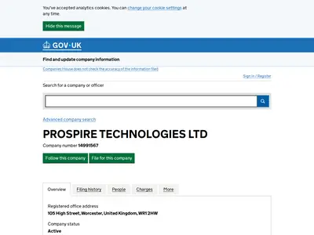

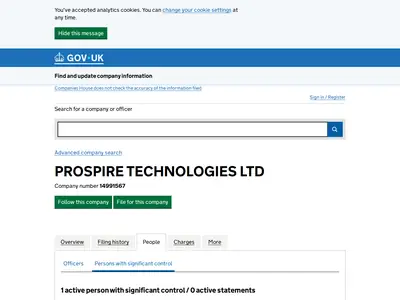

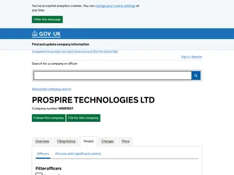

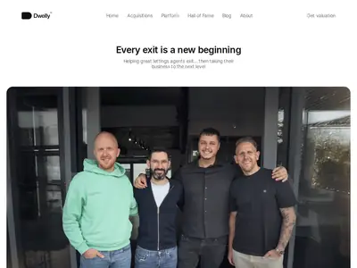
Раунды: сколько привлечено акциями и сколько долгом
Dwelly привлекает деньги двумя способами. Акционеры покупают долю в компании и зарабатывают на росте её стоимости, эти деньги не возвращаются. Кредитор даёт заём, получает проценты, плату в конце срока и варранты (право купить акции по фиксированной цене). Отдельного инвестора под каждую сделку у Dwelly нет: и акции, и долг оформлены на головную компанию.
| Дата | Раунд | Всего | Акции | Долг | Кто | Что видно в реестре |
|---|---|---|---|---|---|---|
| 2024 | Pre-seed | не раскрыта | не раскрыта | — | лид Антон Буздалин (основатель «Еаптеки»), Mandeep Singh | акционером записан Роман Буздалин |
| 05.06.2024 | Seed | $5,69 млн20 | $5,69 млн | — | ангелы из Uber, Airbnb, Gett, Yango, McKinsey, BCG, Citi, Zapp | эмиссии 05.04, 10.04 и 02.05.2024 в GBP, USD и EUR |
| 01.07.2025 | вход General Catalyst | в составе раунда A | General Catalyst XII Creation | GC стал PSC с долей 25–50%, в совет вошёл директор от GC, принят новый устав | ||
| 25.02.2026 | Series A | $93 млн (£69 млн)13 | £32 млн | £37 млн, Trinity Capital | General Catalyst (лид), Begin Capital, s16vc, DVC | заём Trinity от 29.01.2026, залог на группу |
| 10.04.2026 | вход EQT | в составе раунда B | EQT Growth; Trinity купила акции Preferred Series B | директор от EQT, эмиссия 15.04.2026 | ||
| 27.05.2026 | переговоры | $200 млн (Bloomberg) | — | — | — | — |
| 28.07.2026 | Series B | $170 млн17 | $95 млн (≈ £70 млн) | $75 млн (≈ £56 млн) | EQT Growth (лид), General Catalyst, s16vc, Begin Capital, DVC; ангелы: CEO ElevenLabs, Legora, Synthesia; Philipp Freise (KKR) | эмиссия 28.07.2026 |
| Итого объявлено в раундах A и B | больше $260 млн | ~£103 млн | ~£93 млн | пересчёт ResultSense18 | ||
Почти половина объявленной суммы приходится на долг. Pre-seed и seed были небольшими и полностью акционерными, крупные деньги пришли в 2026 году. Перед раундом A основатели за три месяца обошли 30 инвесторов, и большинство отказали21.
Куда пойдут деньги раунда B
В анонсе раунда B Dwelly называет три направления17. По Estate Agent Today, в планах также «Selected European market expansion» — «выборочный выход на рынки Европы»26. Сделок и вакансий в ЕС на 07.10.2026 нет.
| Направление | Что сказано |
|---|---|
| Разработка ИИ | развитие собственной платформы, на которую переводятся купленные агентства |
| Покупка агентств | сначала в Великобритании, затем за её пределами; первой страной названа Франция |
| Продукты для собственников | гарантия аренды, юридическая защита, финансирование, маркетплейс подрядчиков |
| Команда | около 300 сотрудников, к концу 2026 года объявлен рост до 1 50047 |
Цена акции между раундами
Оценка компании публично не раскрыта, но рост цены акции виден по двум документам. Варрант Trinity даёт право купить акции Preferred Series A1 по £50,69 за штуку15. Акции Preferred Series B выпускались по £103,04955. Цена выросла в 2,03 раза примерно за полгода (расчёт).
Что раунд B показывает в реестре
Формы SH01 (уведомления об эмиссии акций) показывают две эмиссии привилегированных акций Series B по £103,0495 за акцию. С 10 по 15.04.2026 выпущено 429 758 акций на £44,29 млн, с 26.06 по 28.07.2026 ещё 40 354 акции на £4,16 млн. Итого в реестре видно около £48,4 млн оплаченных акций Series B (расчёт)5. В пресс-релизе акционерная часть раунда B составляет $95 млн (≈ £70 млн), так что около £22 млн в формах SH01 пока не видно (расчёт). Объяснения могут быть разными: вторичная продажа, транши или ещё не зарегистрированные эмиссии (гипотеза).
Как устроен долг
Долг Dwelly дала Trinity Capital, американский публичный кредитор, который выдаёт венчурный долг: заём растущей компании под залог её активов с правом купить её акции. По устройству это кредитная линия. Кредитор обещает лимит, то есть максимальную сумму, которую готов дать. Компания берёт деньги частями (траншами) по мере того, как закрывает сделки. Проценты начисляются только на взятую сумму. Залогом служат сами купленные агентства: при каждой новой покупке в реестре появляется новый залог.
На 30.06.2026 по отчёту Trinity 10-Q взято $13,8 млн, около £10,25 млн (расчёт)15. Эта дата раньше анонса раунда B (28.07.2026), поэтому взятая сумма относится к займу от 29.01.2026, открытому в раунде A. Лимит по договору в отчёте Trinity не указан. Источники называют разные цифры: $50 млн (Trinity, 26.02.2026)14, £37 млн (Dwelly, раунд A) и $75 млн (Dwelly, раунд B). Какие из них пересекаются, по открытым данным не видно, поэтому остаток «не взято» на полосе ниже показан относительно объявленных ~£93 млн (расчёт).
| Параметр | Значение |
|---|---|
| Договор | Обеспеченный заём от 29.01.2026 со сроком погашения 01.02.2030. Ставка Base Rate + 8,5%, но не ниже 12,2%, в конце срока платится ещё 2,0%. Варранты на акции Preferred Series A1 действуют до 29.01.203615 |
| Объявленные лимиты | Trinity называет $50 млн (26.02.2026)14, Dwelly £37 млн в раунде A и $75 млн в раунде B |
| Взято на 30.06.2026 | Номинал $13,797 млн, стоимость $13,663 млн, справедливая стоимость $13,477 млн (97,7% номинала). Признаков проблем с обслуживанием долга в отчёте нет15. В фунтах это около £10,25 млн (расчёт) |
| Акции у Trinity | Варрант на 3 831 акцию Preferred Series A1 стоит $134 тыс. при цене покупки $62 тыс. Пакет из 3 641 акции Preferred Series B куплен за $505 тыс. и оценён в $496 тыс.15 |
| Цена денег | При ставке 12,2% на взятую сумму это около $1,68 млн (£1,25 млн) процентов в год и ещё около $0,28 млн в конце срока (расчёт). Если взять £50 млн, проценты составят не меньше £6,1 млн в год при оценочной выручке группы £18–27 млн (расчёт) |
| Залоги | Залоги от 29.01.2026 оформлены на Prospire Technologies, Prospire Operations, Gallant Richardson, Pennington, Parks, HC Lettings, Brookdale и SBK Lettings4. Залоги от 01.09.2026 оформлены на Move, Eden Harper и AP Morgan Lettings. Кредиты продавцов (Lloyds у Move, Barclays у Settio, Dudley Taylor у SBK) погашены на закрытии сделок |
Средняя доходность долгового портфеля Trinity во втором квартале 2026 года составила 15,0%, так что условия для Dwelly мягче средних. Заём Prospire занимает 0,55% долгового портфеля Trinity, в котором $2,7 млрд у 190 компаний. Просроченные займы составляют 0,8% портфеля16. Отчёт Trinity за третий квартал 2026 года на 07.10.2026 не вышел. В нём будет видно, сколько долга взято под покупки Move, Eden Harper и AP Morgan, залоги на которые оформлены 01.09.2026.
Как деньги доходят до агентств
Головная компания вкладывает капитал в Prospire Operations и даёт ей внутригрупповые займы, а Prospire Operations покупает агентства. На 31.12.2025 Prospire Operations была должна группе £21,9 млн, из них £19,33 млн головной компании. Купленные агентства тоже получают займы от группы: Gallant Richardson на 31.12.2024 была должна головной компании £2 млн, к концу 2025 года долг сократился до £582 тыс.5 Покупки 2025 года оплачены из акционерного капитала. Долг Trinity появился после того, как портфель был собран и капитал привлечён.

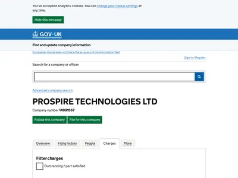
Кто контролирует и во сколько оценена компания
После входа в раунд A крупнейшим акционером Dwelly стал фонд General Catalyst: он единственный числится лицом со значительным контролем и держит место в совете директоров; ещё одно место с 10.04.2026 у EQT Growth. На 08.2025 основатели вместе держали около 47% акций, у каждого по отдельности меньше 25%.
| Что | Данные |
|---|---|
| Лица со значительным контролем (PSC) | С 01.07.2025 это General Catalyst XII Creation, L.P. (Делавэр), доля 25–50%. Основатели числились PSC с долей 25–50% каждый с 2023 года. Хануков вышел из этого статуса 05.04.2024, Дроздов и Лифшиц 01.07.20253 |
| Доли на 08.2025 | General Catalyst 25,9%, Дроздов 18,8%, Лифшиц 16,2%, Хануков 11,8%, у остальных акционеров 27,3% (расчёт). Среди акционеров есть Антон Буздалин и Kalum Brannan, основатель Howsy, проданного Dexters в 2022 году12 |
| Совет директоров | Дроздов (с 10.07.2023), Лифшиц и Хануков (с 26.06.2025), Jeannette zu Fürstenberg от General Catalyst (01.07.2025 – 17.07.2026), Nils Petter Nygaard от EQT Growth (с 10.04.2026), Zeynep Yavuz от General Catalyst (с 17.07.2026)2 |
| Программа General Catalyst | $1,5 млрд на ИИ-консолидации (покупка сервисных компаний и перевод их на ИИ-платформу). В недвижимости в ней два проекта: Long Lake (США) и Dwelly. Цель фонда — поднять EBITDA купленных компаний с 5–10% до 30–40%35 |
Оценка на объект
Dealroom оценивает Dwelly в $380–570 млн19. При 15 000 объектов это $25–38 тыс. на объект. За объект в покупках 2025 года Dwelly заплатила около £2 430 (около $3 100), так что инвесторы оценивают объект в 8–12 раз дороже цены покупки 2025 года; к цене первых сделок (до ~£1 930) — до 16 раз (расчёт). Разницу составляют ожидания по платформе, темпу сделок и росту маржи до целевых 35–40%; при рыночной марже агентств 10–15% такая оценка не складывается (гипотеза).
Отчётность группы за 2025 год
Отчётность за 2025 год, поданная 30.09.2026, впервые позволяет оценить, сколько Dwelly платит за купленный объект. Все десять компаний группы сдали отчёты в упрощённом виде, без отчёта о прибылях и убытках. Выручка, цены сделок и условия отложенной оплаты не раскрыты ни у одной компании. Аудита нет, директора оценили способность группы работать следующие 12 месяцев без оговорок56.
Консолидированный баланс
| Статья | 31.12.2025 | 31.12.2024 | Изменение |
|---|---|---|---|
| Нематериальные активы | £24,51 млн | £2,79 млн | +£21,72 млн |
| в т. ч. гудвил | £24,40 млн | £2,61 млн | +£21,80 млн |
| Деньги | £7,22 млн | £6,39 млн | +£0,83 млн |
| Обязательства до года | £5,41 млн | £0,59 млн | ×9,2 |
| в т. ч. прочие кредиторы | £4,34 млн | £0,41 млн | +£3,93 млн |
| Обязательства свыше года | £12,6 тыс. | £5,51 млн | −£5,50 млн |
| Чистые активы | £27,13 млн | £3,13 млн | ×8,7 |
| Эмиссионный доход (деньги акционеров сверх номинала) | £31,40 млн | £3,65 млн | +£27,75 млн |
| Непокрытый убыток | £4,27 млн | £0,52 млн | +£3,75 млн |
| Средний штат группы | 104 | 17 | ×6,1 |
Убыток группы за 2025 год составил £3,73 млн против £0,52 млн годом ранее. Без амортизации гудвила убыток около £2,77 млн (расчёт). Гудвил списывается равными долями за 10 лет, за 2025 год начислено £0,96 млн. Купленные в 2025 году агентства принесли группе £231,7 тыс. прибыли с даты покупки. В балансе на 31.12.2025 долга Trinity нет, потому что заём оформлен 29.01.2026. В 2024 году у группы были долгосрочные прочие обязательства £5,5 млн, к концу 2025 года они исчезли. Вероятно, это был конвертируемый заём, который перешёл в акции (гипотеза)5.
Сколько стоил купленный объект
| Показатель | Значение | Основа |
|---|---|---|
| Объекты агентств, купленных в 2025 году | ~8 400 | Pennington 550, Parks 450, Number 1 Letting 850, HC Lettings 850, SBK 4 600, Brookdale 1 100 (пресса) |
| Вложения Prospire Operations в дочерние компании за 2025 год | £20,38 млн (с £2,81 млн до £23,19 млн) | отчётность Prospire Operations |
| Вложения на объект | ~£2 430 | расчёт |
| Гудвил 2025 года на объект | ~£2 710 | £22,75 млн / 8 400, расчёт; сюда входит и сделка по активам Abbot Fox |
| Цена к годовой выручке агентства | ~1,35–2,0× | при выручке £1 200–1 800 на объект, расчёт |
| Первые две сделки (2024) | не больше ~£1 930 за объект | £2,81 млн вложений на ~1 450 объектов Lime и Gallant Richardson, расчёт |
| Возможная отложенная оплата продавцам | до £3,64–4,34 млн | прочие кредиторы Prospire Operations £3,64 млн (2024: £0,25 млн) и группы £4,34 млн; в отчётности назначение не указано (гипотеза) |
Цена около 1,35–2,0 годовой выручки совпадает с рыночными ориентирами. Atomic называет 1,5–2,5 годовой комиссии за портфель в полном управлении46. Foxtons 23.09.2026 заплатила за четыре агентства £4,8 млн сразу и £1,2 млн позже при выручке £3,2 млн, то есть 1,5 выручки сразу и 1,9 в сумме33. Гудвил (£22,75 млн) получился больше вложений (£20,38 млн), хотя у купленных компаний положительные чистые активы. По упрощённой отчётности эту разницу не сверить, она требует уточнения.
Купленные агентства: балансы за 2025 год
| Агентство | Период | Чистые активы, было → стало | Сотрудники (среднее) | Деньги | Что примечательно |
|---|---|---|---|---|---|
| Lime Property (Hull) | 2025 | £65,6 тыс. → £470,7 тыс. | 11 (2024: 12) | £2,27 млн (было £0,25 млн) | должна Prospire Technologies £0,90 млн и Prospire Operations £0,86 млн; возможно, это расчётный центр группы (гипотеза) |
| Gallant Richardson | 2025 | £272,6 тыс. → £358,2 тыс. | 11 (2024: 10) | £79,3 тыс. (было £2,18 млн) | долг перед Prospire Technologies сократился с £2 млн до £582 тыс.; гудвил £50,3 тыс. списан |
| Pennington | 9 мес. | £324,7 тыс. → £124,1 тыс. | 7 (было 8) | £120,7 тыс. | нераспределённая прибыль −£200,6 тыс., вероятно, выплата наверх (гипотеза) |
| Parks Residential | 9 мес. | £493,7 тыс. → £519,0 тыс. | 10 (было 11) | £111,6 тыс. | дебиторка от Prospire Operations £526,6 тыс. |
| Number 1 Letting | 9 мес. | £96,5 тыс. → £220,5 тыс. | 15 (было 16) | £150,8 тыс. | заём директору £101,4 тыс. погашен |
| HC Lettings | 2025 | £106,1 тыс. → £226,8 тыс. | 12 (2024: 13) | £245,8 тыс. | собственный гудвил £75 тыс. |
| Brookdale | 15 мес. | £1,160 млн → £1,175 млн | 22 (2024: 19) | £410,9 тыс. | налог £162,3 тыс. при приросте прибыли £14 тыс.; вероятно, выплаты акционерам около даты сделки (гипотеза) |
| SBK Lettings | 2025 | £5,17 млн → £4,83 млн | 80 (2024: 77) | £178,9 тыс. | убыток £339,7 тыс.; нематериальные активы выросли с £4,29 до £8,84 млн; заём Dudley Taylor £2 млн погашен |
Штат купленных агентств за год почти не изменился: в Lime было 12 человек, стало 11, в HC Lettings 13 и 12, в Number 1 Letting 16 и 15. Группа выросла за счёт центральной команды: в головной компании 13 человек, всего около 300 на 02.2026513. Годом раньше упрощённые балансы показывали у Prospire Technologies £3,06 млн чистых активов и 5 сотрудников, у Prospire Operations £4,44 млн чистых активов и £2,01 млн денег.
Откуда изменения 2024 → 2025
| Изменение | Величина | Причина |
|---|---|---|
| Гудвил | +£21,8 млн | шесть покупок 2025 года, ~8 400 объектов |
| Эмиссионный доход | +£27,7 млн | часть раунда A (General Catalyst), пришедшая в 2025 году |
| Деньги | +£0,8 млн | £27,7 млн капитала минус ~£20,4 млн на покупки минус операционный убыток (расчёт) |
| Обязательства до года | +£4,8 млн | прочие кредиторы +£3,9 млн (возможно, отложенная оплата продавцам, гипотеза) и налог купленных агентств +£0,55 млн |
| Убыток | ×7,2 (£0,52 → £3,73 млн) | штат вырос с 17 до 104, амортизация гудвила £0,96 млн |

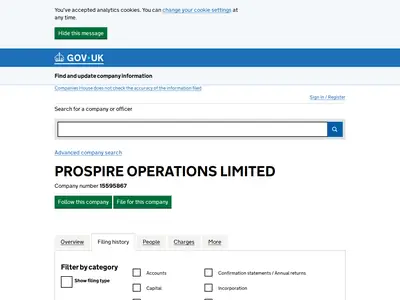
Сделки и расчёт с продавцами
Сделки Dwelly устроены однотипно. Обычно Dwelly покупает 75%+ акций агентства через Prospire Operations. Агентство остаётся отдельным юрлицом с прежним названием и брендом. В одном случае куплены активы: Dwelly зарегистрировала новую компанию, и та забрала портфель договоров Abbot Fox Lettings. Ещё четыре агентства (Lime, Pennington, Parks, Settio) куплены через холдинговые компании продавцов, которые потом ликвидированы6.
Все сделки по реестру и прессе
В колонке «Реестр» стоит дата смены владельца в Companies House, в колонке «Анонс» дата первой публикации. Объекты указаны по прессе и по странице Hall of Fame, если цифры расходятся.
| № | Агентство | Где | Реестр | Анонс | Объекты | Детали |
|---|---|---|---|---|---|---|
| 1 | Lime Property | Халл | ~04–05.2024 | 24.09.2024 | 1 000 | 15 сотрудников, выручка £1,2 млн; продавец Сэм Хамфрис стал главой M&A |
| 1a | Lime HU17 | Беверли | 27.02.2026 | — | — | докупка через Lime Property (Hull) |
| 2 | Gallant Richardson | Колчестер | 01.10.2024 | 05.12.2024 | 450 / 420 | выручка £0,8 млн; нанят Paul Jardine (ex-LSL, Purplebricks) |
| 3 | Pennington | Ипсвич | 28.02.2025 | 27.05.2025 | 550 / 475 | покупка через холдинг продавца |
| 4 | Parks Residential | Брайтон | 31.03.2025 | 03.07.2025 | 450 / 440 | покупка через холдинг продавца |
| 5 | Number 1 Letting | Понтефракт | 04.04.2025 | 29.07.2025 | 850 / 775 | брокер Letts Acquire |
| 6 | HC Lettings | Ноттингем | 20.06.2025 | 02.09.2025 | 850 | брокер Adam J Walker; аренду выделили из HoldenCopley в 2024 году |
| 7 | SBK Lettings | Мидлендс, 13 отделений | 26.11.2025 | 02.12.2025 | 4 600 | арендное подразделение Sheldon Bosley Knight; rent book £25 млн; выручка £5,74 млн за 2024 год44 |
| 8 | Brookdale | Питерборо | 25.11.2025 | 20.01.2026 | 1 100 | брокер Atomic; владельцы ушли на пенсию |
| 9 | Abbot Fox Lettings | Норидж | 15.12.2025 | — | — | сделка по активам: портфель забрала новая компания Dwelly |
| 10 | Goodwin | Стэмфорд | 02.02.2026 | 04.03.2026 | 330 | аренда и продажи |
| 11 | Albery Tyson | Маркет-Харборо | 31.03.2026 | 28.05.2026 | 250 | объединено с отделением SBK |
| 12 | Move | Челтнем, 3 отделения | 01.04.2026 | 11.06.2026 | 1 100 / 1 150 | 30 сотрудников на 2024 год |
| 13 | Elliot Oliver | Челтнем | 01.04.2026 | 04.06.2026 | 900 / 871 | основатель вышел из директоров |
| 14 | Eden Harper | Лондон, Брикстон и Баттерси | 02.04.2026 | 14.04.2026 | 250 / 249 | вход в Лондон |
| 15 | AP Morgan Lettings | Реддитч | 01.05.2026 | 16.07.2026 | 500+ / 447 | брокер Atomic; продажи остались у основателей |
| 16 | Settio | Манчестер, Сингапур | 29.05.2026 | 26.06.2026 | 2 000+ / 2 061 | иностранные инвесторы из 17 стран, активы £600 млн+; советник продавца UHY Williamson Croft |
| 17 | Shaws | Лондон, Кенсингтон | 10.06.2026 | 06.08.2026 | 250 | основана в 1994 году |
| 18 | Skylark Lettings | — | 24.06.2026 | — | — | новая компания, цель не установлена; похожа на оболочку для сделки по активам |
| 19 | Paramount | северо-запад Лондона | 16.07.2026 | 01.09.2026 | 1 100 | работает с 1989 года, 30 сотрудников; управляющий Spencer Lawrence остаётся; 10-я сделка 2026 года25 |
Между сменой владельца в реестре и анонсом в прессе проходит от недели до пяти месяцев. Поэтому новые сделки раньше появляются в реестре. На 07.10.2026 после Paramount новых анонсов нет. Брокеры по сделкам: Atomic (Brookdale, AP Morgan), Adam J Walker (HC Lettings, Goodwin), Letts Acquire (Number 1 Letting, аудит портфеля Goodwin).
Что обещают продавцу и что видно на деле
| Обещание на сайте | Что видно в реестре и прессе |
|---|---|
| «We retain the original branding and respect your legacy» — сохраняем бренд и наследие | Бренды сохранены: Lime, Eden Harper, Number 1 Letting и другие работают под своими именами. Исключения: AP Morgan Lettings на Rightmove уже выступает как «SBK Lettings, Redditch»31, Albery Tyson объединено с SBK, профиль на Google Maps помечен «permanently closed» |
| «We retain key staff» — сохраняем ключевых людей | Продавцы-директора выходят из совета в день закрытия, директором назначается Дроздов. Из пяти первых владельцев остался один24. Исключения: управляющий Paramount остаётся в операционной роли, Хамфрис из Lime стал главой M&A |
| «Competitive cash-out offers for immediate liquidity», «Flexible payment structures» — выгодные выплаты деньгами сразу, гибкая структура оплаты | Цены и отсрочки не раскрыты. Прочие обязательства Prospire Operations £3,64 млн могут оказаться отложенной оплатой (гипотеза) |
| «We can close transactions within 10 weeks» — закрываем сделку за 10 недель | Проверить по открытым данным нельзя: реестр показывает только дату закрытия |
| «no hidden clauses or renegotiations» — без скрытых условий и пересмотра цены | — |
Агентства продают владельцы, которые уходят на пенсию (Brookdale), устали от регулирования («Legislation changes take up too much of my time» — «изменения в законах отнимают слишком много времени») или не хотят вкладываться в софт. Владелец Sheldon Bosley Knight описал выбор так: «keep ownership and battle on with an increasingly outdated software proposition, or give up ownership» — «сохранить бизнес и дальше бороться с устаревающим софтом или отдать бизнес». На странице Acquisitions перечислены шесть факторов оценки: мультипликатор выручки, качество и размер портфеля, сила бренда, операционная инфраструктура, местный рынок, дополнительные доходы23.
Как платят продавцу
| Вопрос | Что известно |
|---|---|
| Что говорит Dwelly | Покупка акций или активов, «cash-out» сразу, «flexible payment structures», закрытие за 10 недель. Цены не раскрыты23 |
| Что видно в отчётности | На конец 2024 года у Prospire Operations было £250 тыс. прочих обязательств при вложениях £2,8 млн, на конец 2025 года £3,64 млн при вложениях £23,19 млн. Если это отложенная оплата, она составляет порядка 9% (2024) и 16% (2025) накопленных вложений; если считать по приросту прочих кредиторов группы за 2025 год (£3,9 млн) к вложениям года (£20,4 млн) — около 19% (расчёт, гипотеза) |
| Британская практика | Оплата частями: 40% при закрытии, 30% через год, 30% через два. Если собственник уходит в первый год, покупатель получает назад 100% уплаченного за него, если во второй — 50%, после двух лет возврата нет32. Foxtons 23.09.2026 заплатила 80% сразу и 20% отложенно и по условиям33 |
| Пример купленного бизнеса | Отчётность SBK Lettings за 2024 год, до покупки Dwelly, показывает собственные покупки SBK: £547,7 тыс. отложенной оплаты и £1,5 млн займа от Dudley Taylor, одного из владельцев. Часть сделки финансировал владелец44 |
Как Dwelly находит продавцов, проверяет портфель и переводит агентство на платформу, разобрано в разделе «Как Dwelly покупает агентства».

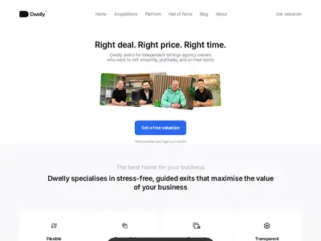

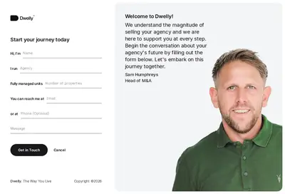

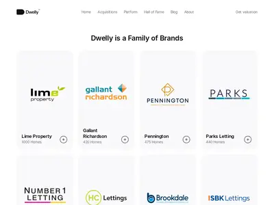

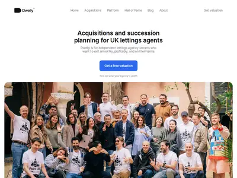
Масштаб, темп роста и команда
Темп Dwelly показывает, сколько людей и денег нужно консолидатору, чтобы делать больше одной сделки в месяц. Весь рост портфеля Dwelly идёт за счёт покупок, органического набора собственников в цифрах не видно. Лифшиц объясняет это так: договор аренды длится около трёх лет, и органически набирать собственников медленно13.
Портфель по датам
| Дата | Объектов | Событие |
|---|---|---|
| 09.2024 | 1 000 | Lime |
| 12.2024 | 1 450 | Gallant Richardson |
| 05.2025 | 2 050 | Pennington |
| 08.2025 | 3 500 | интервью The Negotiator |
| 09.2025 | 4 500 | HC Lettings |
| 01.2026 | 10 000 | Brookdale, после SBK |
| 06.2026 | 11 500 | Elliot Oliver |
| 07.2026 | 14 000 | AP Morgan |
| 09.2026 | 15 000+ | Paramount25 |
| 07.10.2026 | 16 500 | Hall of Fame: 20 агентств, 18 регионов, 2 000+ обращений арендаторов в день22 |
| Показатель темпа | 2025 | 2026 |
|---|---|---|
| Сделок | 6 за 10 месяцев (0,6 в месяц) | 10 к 01.09 (1,25 в месяц) |
| Рост портфеля | ×6,8 (1 450 → ~9 850, расчёт) | ~4,8% в месяц, ~600 объектов в месяц (расчёт) |
Dwelly называет себя «top-10 agency in the UK». На рынке частной аренды Великобритании около 20 000 агентств и около 5,5 млн объектов. Годовая арендная плата превышает £100 млрд, комиссии около £10 млрд, сто крупнейших компаний держат меньше 30% рынка1713. Цель на конец 2026 года, по словам компании, 50 000 объектов и 1 500+ сотрудников13. В анонсе раунда B рост штата с ~300 до 1 500 к концу года повторён47. На 07.10.2026 цель по объектам втрое больше нынешнего портфеля.
Сколько людей
| Источник | Число | Что считает |
|---|---|---|
| Отчётность группы за 2025 год | 104 (2024: 17) | средний штат за год; SBK (77–80 человек) куплен 26.11.2025 и почти не попал в среднее5 |
| Сумма средних численностей юрлиц группы | 184 | расчёт по отчётам десяти компаний, включая периоды до покупки |
| Fortune, 02.2026 | ~300, из них 40 в инженерии, продукте и аналитике | со слов компании13 |
| Вакансия продуктового дизайнера | «development team is a team of 5, a few analysts, and one product designer» — «команда разработки — 5 человек, несколько аналитиков и один продуктовый дизайнер» | разработка28 |
| LinkedIn, 06.10.2026 | 90 сотрудников (диапазон 51–200), 21 769 подписчиков | только те, кто указал Dwelly в профиле30 |
По LinkedIn видно, где живёт центральная команда. Из 90 человек 48 работают в Великобритании (37 в Лондоне), 8 в ЮАР, по 4 в Сербии и Испании, по 3 в Португалии, Ирландии и США. По функциям больше всего людей в развитии бизнеса (17), IT (14), операциях (13) и инженерии (13). Среди вузов чаще всего встречаются МФТИ (7), ВШЭ (6), LSE (4) и ШАД Яндекса (3)30. Как устроена команда и нагрузка на сотрудника, разобрано в разделе «Команда».
Найм и команда покупок
Покупками занимается связка из трёх уровней: Head of Corp Dev, Head of M&A (Сэм Хамфрис) и M&A Manager, под ними три менеджера по развитию бизнеса. В вакансии M&A Manager от 10.08.2026 работа описана так: «high-velocity roll-up, running multiple deals at once and supporting fundraising in parallel» — «быстрая консолидация, несколько сделок одновременно и параллельная помощь в привлечении денег»27. После каждой сделки на место выезжают Launch Manager и Associate Launcher (Post-M&A) на 2–3 месяца. Хамфрис публично говорит о сокращении среднего срока закрытия заявок на ремонт на треть («thirty-three percent reduction in average resolution times») и о том, что ИИ «freeing them from repetitive admin» — «освобождает агентов от рутинной административной работы»48.
На доске Greenhouse 28 вакансий, среди новых есть Senior Backend Software Engineer по платформе миграции данных, Head of FP&A и Head of IT & Security28. На Indeed 24–26 вакансий в купленных городах: руководители групп сдачи, менеджеры по аренде, Property Specialists. Вакансии есть и в Кембридже, Бристоле, Лафборо и Лестере, где известных сделок нет. Возможно, это ещё не объявленные покупки (гипотеза), к конкретному агентству вакансии не привязаны29. Дроздов в LinkedIn ищет «rock star GTM leader» (руководителя продаж и выхода на рынок). Перед звонком с CEO кандидат заполняет анкету на 30–60 минут, а одно собеседование на старшую роль прошло в формате 15-километрового похода.

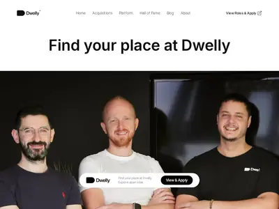

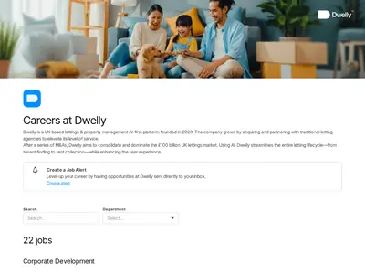
Другие ИИ-консолидаторы
Чтобы понять, насколько модель Dwelly повторяема и куда идут деньги инвесторов, полезно посмотреть на похожие компании. В 2025–2026 годах фонды профинансировали несколько таких проектов в управлении недвижимостью. Объединяет их одно: покупка сервисных компаний и перевод их на общую платформу с ИИ. Ни одного проекта в посуточной аренде среди них нет.
| Дата | Компания | Страна и сегмент | Деньги | Инвесторы | Масштаб |
|---|---|---|---|---|---|
| 23.07.2025 | Buena | Германия, управление жилыми домами | Series A $58 млн34 | GV (лид), 20VC, Stride, Capnamic | 60 000+ квартир, 20+ купленных фирм |
| до 04.2026 | Long Lake | США, управление ассоциациями собственников (HOA) и жилой недвижимостью | $670 млн, 18 купленных бизнесов (Capital & Clarity)35; по карте Caritas $3 млрд+ и $1 млрд облигаций36 | General Catalyst, Alpha Wave | ~$100 млн EBITDA менее чем за два года |
| 2025–2026 | Dwelly | Великобритания, долгосрочная аренда | $260 млн+ | General Catalyst, EQT Growth, Trinity | 16 500 объектов |
| 22.09.2026 | Rising Tide | США, объединение независимых управляющих компаний | Seed, сумма не раскрыта37 | Left Lane Capital | 3 фирмы в пилоте, без покупки контрольной доли |
Long Lake и Dwelly — два проекта программы General Catalyst на $1,5 млрд в недвижимости (см. контроль и оценку). EQT Growth других вложений в такие проекты, кроме Dwelly, в открытых источниках нет. EQT пишет, что в долгосрочной аренде удерживается 90–95% собственников в год, а обычная EBITDA агентства 10–15%40. Dwelly на акциях привлекла около £5 300 на объект (£79,8 млн / 15 000; £79,8 млн — эмиссионный доход на конец 2025 года £31,4 млн плюс £48,4 млн акций Series B по формам SH01), взятым долгом около £680 (расчёт). Акционерного капитала на объект примерно вдвое больше цены покупки. Вторая половина уходит на платформу, центральную команду и покрытие убытков (расчёт).
Ближайший пример консолидации в посуточной аренде — Vacasa. Она покупала местных управляющих по $17–21 тыс. за объект, то есть по 1,5 чистой выручки продавца49, а затем была продана Casago примерно за $130 млн. Как Vacasa теряла объекты, разобрано в разделе «Конкуренты и слабые места».
Показатели Dwelly на объект и сотрудника
Отчёт о прибылях Dwelly не публикует, поэтому экономику модели приходится собирать из разных источников и пересчитывать на объект и на сотрудника. CAC (стоимость привлечения собственника) не считается: Dwelly растёт покупками и не раскладывает затраты по сделкам.
| Показатель | Dwelly | Основа |
|---|---|---|
| Объектов под управлением | 15 000+ (07–09.2026); 16 500 на Hall of Fame | блог Dwelly, Hall of Fame |
| Сотрудников | ~300 (02.2026); в среднем 104 за 2025 год | Fortune; отчётность |
| Объектов на сотрудника | ~33 (10 000 / 300); ~54 (9 850 / 184) | расчёт |
| Годовая аренда на объект | £23 300 (£350 млн / 15 000) | расчёт |
| Годовая аренда на сотрудника | ~£1,17 млн | расчёт |
| Выручка на объект в год | £1 200–1 800 (Lime £1 200, Gallant Richardson £1 780, SBK £1 250); комиссия за управление ~10% аренды, по словам Dwelly42 | отчётность агентств до покупки |
| Выручка к аренде | ~5–8% | расчёт |
| EBITDA-маржа | группа убыточна (−£3,73 млн за 2025 год); у агентств на рынке 10–15%40; цель Dwelly 35–40%41 | отчётность; EQT; подкаст |
| Капитал на объект | ~£5 300 акциями (£79,8 млн / 15 000), ~£680 взятого долга | расчёт |
| Цена покупки на объект | ~£2 430 (2025); не больше ~£1 930 (2024) | отчётность, расчёт |
| Цена к выручке продавца | ~1,35–2,0× | расчёт |
| Оценка на объект | $25–38 тыс. (Dealroom $380–570 млн / 15 000) | расчёт |
| Сделок в месяц | 0,6 (2025), 1,25 (2026) | реестр, пресса |
| Новых объектов в месяц | ~600, только покупками | расчёт |
| Рост портфеля | ×6,8 за 2025 год; ~4,8% в месяц в 2026 году | расчёт |
| Отток собственников (churn) | не раскрыт; удержание по рынку 90–95% в год | EQT |
| Срок окупаемости объекта | при марже 10–15% ~9–20 лет, при марже 35–40% ~3,4–5,8 года | расчёт |
Срок окупаемости показывает, на чём держится модель. При обычной для агентств марже купленный объект окупается за 9–20 лет, при целевой марже Dwelly — за 3,4–5,8 года. Поэтому вся экономика зависит от того, удастся ли платформе поднять маржу и сохранить собственников после покупки (расчёт). Данных о том, что это уже получилось, в открытых источниках нет: группа убыточна, отток не раскрыт. Рычаги для WELCS по тем же показателям — на странице Рычаги для WELCS.
Открытые вопросы
| Что неизвестно | Как узнать |
|---|---|
| Сколько платится продавцу на закрытии и сколько позже; что входит в £3,64 млн прочих обязательств Prospire Operations | Вопрос основателям или Сэму Хамфрису; отчётность за 2026 год (срок подачи 30.09.2027) |
| Сколько долга Trinity взято после 30.06.2026 и каков лимит по договору | Отчёт Trinity 10-Q за третий квартал 2026 года (ориентировочно начало ноября 2026 года), раздел Schedule of Investments |
| Куда делись ~£22 млн акций раунда B, которых нет в формах SH01 | Новые SH01 и подтверждение структуры капитала (CS01) в Companies House |
| Выручка группы и маржа купленных агентств | Отчёт о прибылях не публикуется; только вопрос компании или будущая полная отчётность при росте группы |
| Почему гудвил (£22,75 млн) больше вложений (£20,38 млн) | Примечания полной отчётности SBK и Move; вопрос финансовому директору |
| Какие сделки стоят за вакансиями в Кембридже, Бристоле, Лафборо и Лестере и за Skylark Lettings | Ежемесячный поиск в Companies House компаний, где Prospire Operations стала PSC |
| Сколько из объявленного роста штата до 1 500 человек уже набрано и в каких ролях | Повторные снимки LinkedIn и доски вакансий раз в месяц; отчётность за 2026 год |
| Реальная численность группы на 10.2026 | Отчётность за 2026 год; повторные снимки LinkedIn раз в месяц |
Источники
- PROSPIRE TECHNOLOGIES LTD, Companies House, 07.10.2026
- Prospire Technologies: директора, Companies House, 07.10.2026
- Prospire Technologies: лица со значительным контролем, Companies House, 07.10.2026
- Prospire Technologies: залоги, Companies House, 07.10.2026
- Prospire Technologies: история подач (отчётность за 2025 год, SH01), Companies House, 30.09.2026
- Prospire Operations: история подач и отчётность за 2025 год, Companies House, 30.09.2026
- DWELLY LTD 15055007 (посторонняя компания), Companies House
- From Uber rivals to Dwelly, PropertyWire, 03.10.2024
- ПИК-Аренда, Хайтек, 10.06.2020
- Выпускник: Илья Дроздов, ВШМ СПбГУ
- Ex-Uber execs' Dwelly zips £69M, Tech Funding News, 02.2026
- Раунд финансирования Dwelly, vc.ru · Единорог, 2026
- Dwelly, an AI startup snapping up U.K. real estate agencies, gets $93 million, Fortune, 25.02.2026
- Trinity Capital provides $50M growth capital to Dwelly, Trinity IR, 26.02.2026
- Trinity Capital 10-Q, Schedule of Investments, Trinity IR, 05.08.2026
- Trinity Capital Reports Second Quarter 2026 Financial Results, PR Newswire / StreetInsider, 05.08.2026
- Dwelly raises $170M Series B, блог Dwelly, 28.07.2026
- Dwelly £128m lettings AI raise, ResultSense, 29.07.2026
- Dwelly, Dealroom
- Dwelly, PitchBook
- Dwelly: the founders respond, Series A Stories, 20.03.2026
- Hall of Fame, dwelly.group, 07.10.2026
- Acquisitions, dwelly.group, 2026
- Interview: why this tech boss wants to buy your lettings agency, The Negotiator, 20.08.2025
- Popular long-standing independent agency acquired by fast-growing rival, Estate Agent Today, 01.09.2026
- Group raises £125m to buy independent agencies and develop AI, Estate Agent Today, 07.2026
- M&A Manager (Corp Dev), доска вакансий General Catalyst, 10.08.2026
- Вакансии Dwelly, Greenhouse, 07.10.2026
- Dwelly: вакансии, Indeed UK, 07.10.2026
- Dwelly, LinkedIn, 06.10.2026
- SBK Lettings, Redditch (юрлицо AP Morgan Lettings), Rightmove, 07.10.2026
- How to buy a lettings business without being had, TrueLegal
- Foxtons: four regional acquisitions, Reuters RNS, 23.09.2026
- GV and 20VC back Buena, Tech.eu, 23.07.2025
- The General Catalyst behind $1.5 billion of AI roll-ups, Capital & Clarity, 07.04.2026
- AI rollup market map, Caritas Ventures, 09.2026
- Rising Tide raises seed round, PR Newswire, 22.09.2026
- EQT, General Catalyst co-lead $170M round, citybiz, 07.2026
- Growing estate agency group hits 14,000 properties under management, The Negotiator, 06.08.2026
- Backing Dwelly, EQT, 28.07.2026
- Ep 392: Ilya Drozdov from Dwelly, Life Self Mastery, 04.04.2025
- Ten questions with Dan Lifshits, Online Marketplaces, 14.01.2025
- Tech-based management firm buys Hull agency, PropertyWire, 09.2024
- SBK Lettings: история подач и отчётность, Companies House, 25.09.2026
- London-based Dwelly secures over €79.3M, EU-Startups, 02.2026
- Selling an estate agency lettings portfolio, Atomic Consultancy
- Dwelly raises $170M led by EQT and General Catalyst, Tech Funding News, 28.07.2026
- What does AI really mean for the letting industry: Q&A with Sam Humphreys, Property118, 07.01.2026
- Vacasa SPAC presentation deep dive: acquisition strategy, Rental Scale-Up, 2021